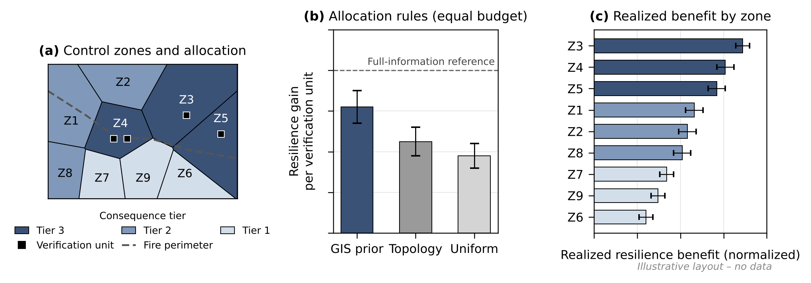

(a) Where the four units go under the GIS rule. (b) Served energy protected per unit, by rule, with 95% intervals and the perfect-information best case. (c) Which zones gained most.
This doesn’t predict when or where a fire will start. It takes a real fire that already happened, the Eaton fire, and replays it on a computer model of the power grid.
If operators guess wrong, they might cut power when they didn’t need to, or turn it back on somewhere it isn’t safe.
Send a crew or use a backup sensor. But there are only a few of those to go around, four in the simulation, so the question is where to put them before the fire shows up.
Use a map. Put them where losing information would hurt most: places the fire is likely to reach, with lots of customers or important buildings like hospitals.
Follow the wiring. Put them at the busiest parts of the grid.
Spread them out evenly everywhere.
Colors match the bars in panel (b) of the chart.
Replay the same fire over and over with each plan, and see which one keeps the most homes powered.
Power companies get a simple rule for the start of every fire season: put your checkers where the map says the stakes are highest, not everywhere equally.
It burns equipment and degrades the evidence about it. Readings go missing or arrive up to 15 minutes late (telemetry fog), and remote commands lag (supervisory delay). Operators must decide what to trust.
A verification unit is capacity to confirm conditions independently: a patrol, a portable sensor, a backup communication path. Each check takes 30 minutes and only four are available per fire.
Each zone gets a tier from public map layers: wildfire hazard, criticality (customers and critical facilities) and grid position. Tier 3 marks where losing trustworthy information hurts most.
The same fire is replayed with the same four units placed three ways: by the GIS prior, by topology and load, or evenly. The score is served-energy resilience, the share of normal demand still delivered, over held-out runs with 95% intervals, against a defender that sees the true grid state.
If the GIS rule holds up in the results, it becomes a pre-season investment rule.
Score your zones from public layers: hazard, critical facilities, grid position.
Count your verification budget: patrol crews, portable sensors, backup communication paths.
Pre-position in Tier 3 first instead of spreading capacity evenly.
Pre-authorize local fallback for Tier 3 zones if remote control lags.
Treat stale data as unconfirmed: verify before restoring or re-energizing in fire-exposed zones.
Spend checks where fire meets Tier 3, keeping a reserve for zones reached later.
Review and re-score: compare with the perfect-information case, then update tiers for next season.
The comparison has not been run yet. Validate tiers against your own outage and network data, and align them with your wildfire mitigation plan and control-room procedures.